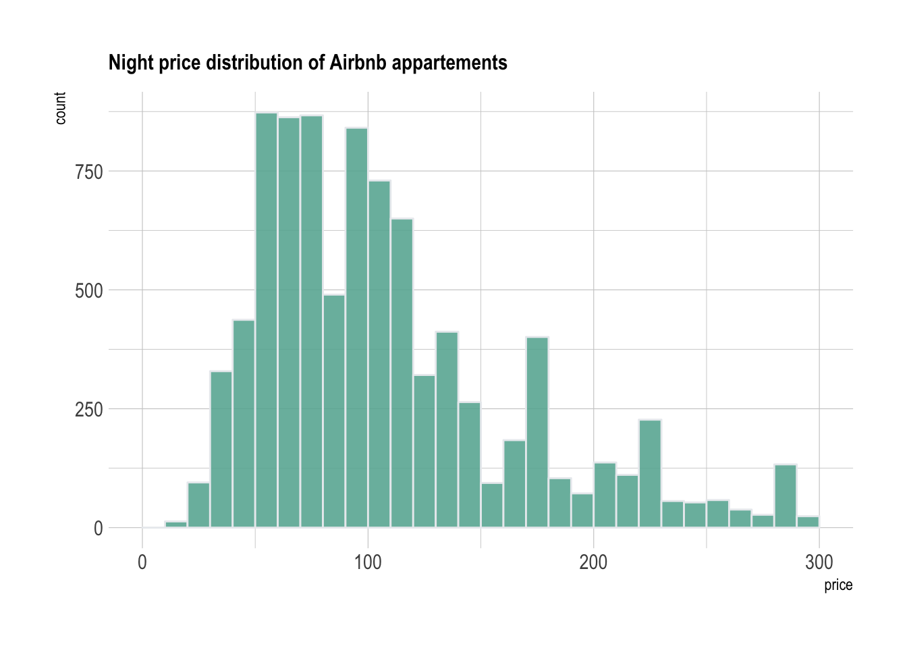
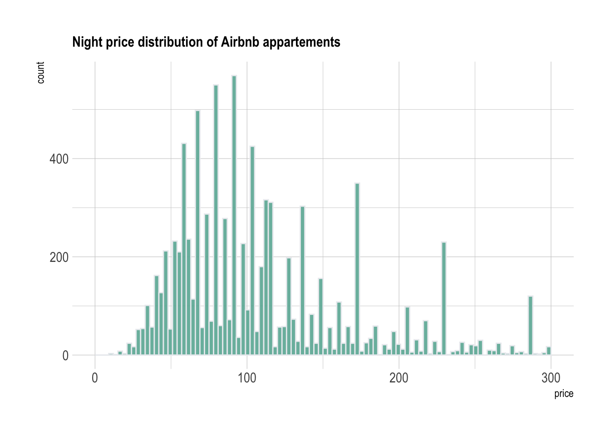
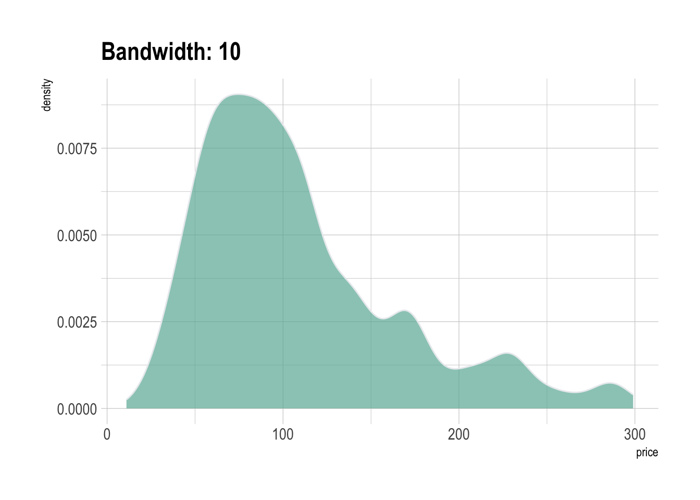
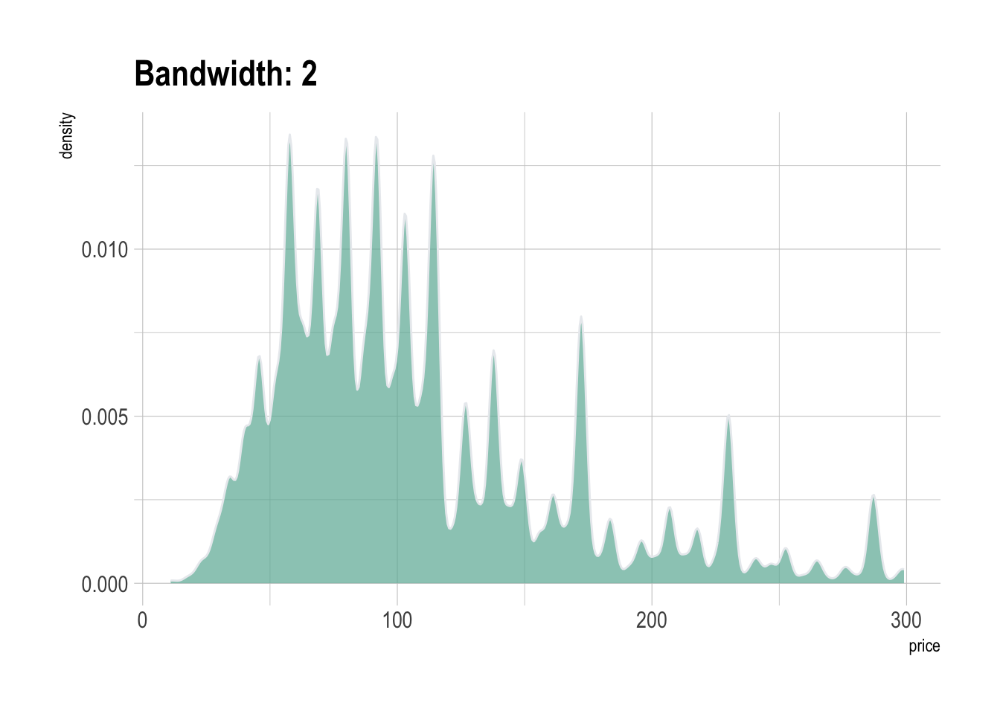

Airbnb prices on the french riviera
A few data analytics ideas from Data-to-Viz.com


This document porvides a few suggestions for analying a dataset composed of a unique numeric variable.
It considers the nightly price of about 10,000 Airbnb apartements on the French Riviera in France.
This example dataset has been downloaded from the Airbnb website and is available on this Github repository. Basically it looks like the table to the right.
# Libraries
library(tidyverse)
library(hrbrthemes)
library(kableExtra)
options(knitr.table.format = "html")
# Load dataset from github
data <- read.table("https://raw.githubusercontent.com/holtzy/data_to_viz/master/Example_dataset/1_OneNum.csv", header=TRUE)
# show data
data %>% head(6) %>% kable() %>%
kable_styling(bootstrap_options = "striped", full_width = F)| price |
|---|
| 75 |
| 104 |
| 369 |
| 300 |
| 92 |
| 64 |
The most common way to represent a unique numeric variable is with a histogram. Basically, the numeric variable is cut in several bins: between 0 and 10 euros a night, between 10 and 20 and so on. This is represented on the X axis. Then, the number of apartments per bin is counted and represented on the Y axis.
Here, it appears that about 500 appartments have a price between 80 and 90 euros. A histogram is a convenient way to visualize the data: it allows us to understand its distribution.
data %>%
filter( price<300 ) %>%
ggplot( aes(x=price)) +
stat_bin(breaks=seq(0,300,10), fill="#69b3a2", color="#e9ecef", alpha=0.9) +
ggtitle("Night price distribution of Airbnb appartements") +
theme_ipsum() +
theme(
plot.title = element_text(size=12)
)
Note that it is important to play with the bin size during your exploratory analysis. Let’s check what happens when spliting prices by bins of 2 euros instead of 10:
data %>%
filter( price<300 ) %>%
ggplot( aes(x=price)) +
stat_bin(breaks=seq(0,300,3), fill="#69b3a2", color="#e9ecef", alpha=0.9) +
ggtitle("Night price distribution of Airbnb appartements") +
theme_ipsum() +
theme(
plot.title = element_text(size=12)
)
There is a huge difference difference between these 2 histograms. Actually a few values are over represented in the dataset (like 58, 64, 69, 75, 80..). This is definitely a signal that you want to understand when analysing your dataset.
A variation of the histogram is the density plot, which is basically a smoothed version of the histogram. It represents a kernel density estimate of the variable. As seen for the bin size of the histogram, it is important to try several values for the bandwidth argument for the same reason:
data %>%
filter( price<300 ) %>%
ggplot( aes(x=price)) +
geom_density(fill="#69b3a2", color="#e9ecef", alpha=0.7, bw=10) +
ggtitle("Bandwidth: 10") +
theme_ipsum()
data %>%
filter( price<300 ) %>%
ggplot( aes(x=price)) +
geom_density(fill="#69b3a2", color="#e9ecef", alpha=0.7, bw=2) +
ggtitle("Bandwidth: 2") +
theme_ipsum()
You can learn more about each type of graphic presented in this story in the dedicated sections. Click the icon below:
Any thoughts on this? Found any mistake? Have another way to show the data? Please drop me a word on Twitter or in the comment section below:
A work by Yan Holtz for data-to-viz.com